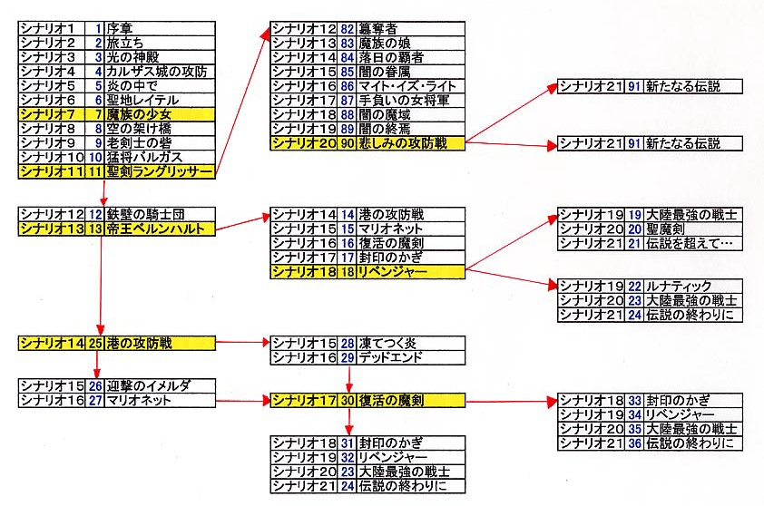
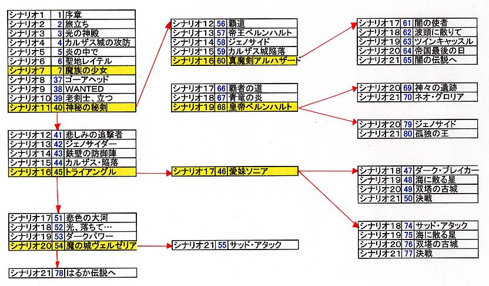

시나리오 분기
- 분기표
- 공통 루트
- 시나리오 7 「魔族の少女」
- 광휘 루트
- 시나리오 13(13) 「帝王ベルンハルト」
- 시나리오 14(25) 「港の攻防戦」
- 시나리오 17(30) 「復活の魔剣」
- 시나리오 18(18) 「リベンジャー」
- 제국 루트
- 시나리오 11(40) 「神秘の秘剣」
- 시나리오 16(45) 「トライアングル」
- 시나리오 17(46) 「愛妹ソニア」
- 시나리오 20(54) 「魔の城ヴェルゼリア」
- 시나리오 21(50, 77) 「決戦」
- 암흑 루트
- 시나리오 16(60) 「真魔剣アルハザード」
분기표
시나리오 셀렉트 대응 루트 간이표
| 번호순 |
루트 |
| 1면 ~ 7면 |
공통 |
| 8면 ~ 36면 |
광휘 |
| 37면 ~ 55면 |
제국 |
| 56면 ~ 65면 |
암흑 |
| 66면 ~ 70면 |
독립군(새턴판) |
| 71면 ~ 73면 |
은폐 |
| 74면 ~ 78면 |
제국 |
분기 진행
| 분기 전 |
→ |
분기 후 |
| 공통 |
→ |
광휘 |
| 공통 |
→ |
제국 |
| 제국 |
→ |
암흑 |
| 암흑 |
→ |
독립군(새턴판) |
광휘 루트

※ 표의 시나리오 12(82) 이하의 분기는 새턴판이므로 주의! SFC판이면 신경 쓰지 않아도 됩니다.
제국/암흑/독립군 루트

※ 표의 시나리오 20(79)과 시나리오 21(80)은 새턴판이므로 주의! SFC판이면 신경 쓰지 않아도 됩니다.
공통 루트
시나리오 7 「魔族の少女」
시나리오 2에서 레아드를 격파하지 않거나 시나리오 5에서 조룸을 격파하지 않는다.
위의 조건 중 하나를 만족하고 시나리오 7을 클리어 하면, 레온으로부터 제국으로 들어오라는 권유가 있다.
레온의 권유를 거절하면 광휘 루트로, 받으면 제국 루트 시나리오 8(37)로 진행할 수 있다. 다만, 조건의 양쪽 모두 격파하고
있으면 강제적으로 광휘 루트로 진행하게 된다.
제국 루트에 가는 경우는 소니아를 설득하지 않으면 배드 엔딩이 된다. 설득 방법은 소니아를 절대로 공격하지 않고, 로우가의 그녀의
3칸 이내에 접근시키면 된다.
광휘 루트
시나리오 13(13) 「帝王ベルンハルト」
보젤을 퇴각시키면 시나리오 14(14)으로 진행,
베른하르트를 퇴각시키면 시나리오 14(25)으로 진행할 수 있다.
시나리오 14(25) 「港の攻防戦」
15턴 이내에 클리어하면 시나리오 15(26)으로 진행,
15턴 이상은 시나리오 15(28)으로 진행할 수 있다.
시나리오 17(30) 「復活の魔剣」
라나를 동료로 하면 시나리오 18(31)으로,
아론을 동료로 하면 시나리오 18(33)으로 진행할 수 있다.
시나리오 18(18) 「リベンジャー」
베른하르트를 쫓고, 베르제리아에 가면 시나리오 19(19)로,
소니아를 쫓고, 베르제리아에 가지 않으면 시나리오 19(22)로 진행할 수 있다.
제국 루트
시나리오 11(40) 「神秘の秘剣」
랑그릿사를 제국에 건네주지 않으면 암흑 루트의 시나리오 12(56)로,
건네주면 그대로 제국 루트를 진행,
레온이 랑그릿사를 취하면 제국 루트를 진행한다.
시나리오 16(45) 「トライアングル」
보젤을 뒤쫓아 가면 시나리오 17(46)으로,
제시카를 뒤쫓아 가면 시나리오 17(51)로 진행한다.
시나리오 17(46) 「愛妹ソニア」
소니아 설득에 성공하면, 시나리오 18(47)로,
실패하면 시나리오 18(74)로 진행한다.
시나리오 20(54) 「魔の城ヴェルゼリア」
소니아 설득에 성공하면, 시나리오 21(78)로,
실패하면 시나리오 21(55)로 진행한다.
시나리오 21(50, 77) 「決戦」
리아나, 라나를 쓰러뜨리면 배드 엔딩으로 직행.
소니아를 설득하면 해피 엔딩으로 갈 수 있다. 설득 방법은 로우가를 소니아의 3칸 이내에 근접시키고, 절대로 공격하지 않아야 한다.
만일 설득 실패 또는 격파하면 철퇴수가 붙으므로 주의하자!
암흑 루트
시나리오 16(60) 「真魔剣アルハザード」
보젤을 배반하면 독립군 루트 시나리오 17(66)로 진행한다.(새턴판 한정)
배반하지 않으면 그대로 암흑 루트를 진행한다.
※ 캐릭터 메이킹을 할 때 8번 질문의 선택에 따라 암흑/독립군 루트가 강제로 분기하지만, SFC판에서는 해당이 없으니 자세한 내용은
생략한다.